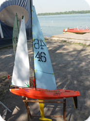
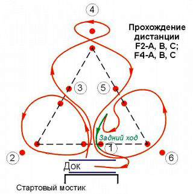

СОРЕВНОВАНИЯ 2012-2015
"Кубок Днепра"
В октябре 2015 года прошли соревнования по спортивным яхтам на р/у класса "П".
"Кубок Днепра" проводится в Днепропетровске уже много лет. На соревнования приезжают участники со всей Днепропетровской области и Украины. Фоторепортаж об этих соревнованиях смотри здесь.
----------------------------------------------------------------------------------------------------------------------------------------
"Областные"
В октябре 2015 года прошли соревнования по радиоупровляемым и моторным кораблям. Соревнования проходили на територии фонтана возле Днепропетровского городского совета. Фоторепортаж об этих соревнованях смотри здесь.
